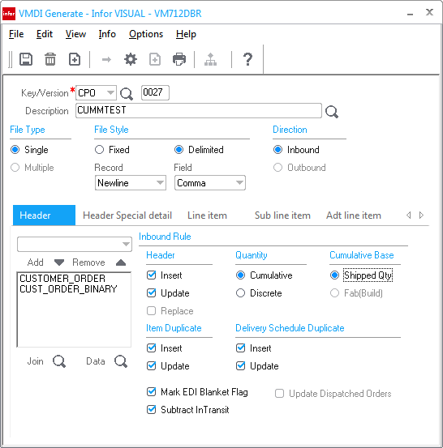

If you want to follow the example, set up the following:
Set up the VMDI layout main information.
Specify the columns you want to use in your layout. Set up columns in the header, line item, and sub line item tabs.
Set up a customer order, named CUMMTEST, that specifies the delivery schedules you want to use for your test.
Set up the customer order EDI Line Accumulator info for each line.
An example of how the marking of the Subtract Intransit checkbox affects the delivery schedules.
To view the test scenario outputs, click here.
Step 1:
For this example, set up the VMDI layout as shown in the picture:
